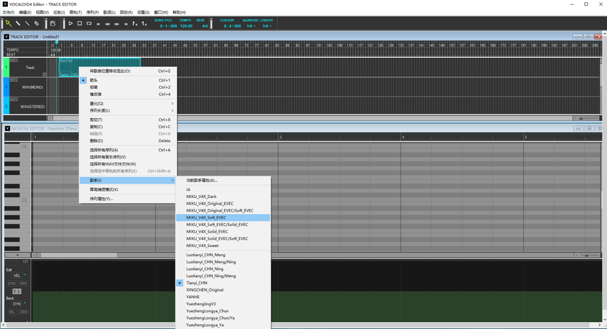

VOCALOID
简介
VOCALOID（日文名：ボーカロイド，日文简称：ボカロ，英文简称：VOCALO，中文名称：博歌乐）是由日本Yamaha株式会社开发的电子歌声合成（Singing Synthesis）技术，以及应用该技术的软件的合称。
VOCALOID是日本YAMAHA公司自主开发的一款电子歌声合成软件，输入音调和歌词，就可以合成贴近人类声音的歌声。截止2020年2月该程序分为VOCALOID、VOCALOID 2、VOCALOID 3、VOCALOID 4、VOCALOID 5共五代，该软件采用Music Technology Group（MTG，庞培法布拉大学下属机构）开发、授权YAMAHA使用的「Frequency-domain Singing Articulation Splicing and Shaping」技术，采集不同人类的声音标本，然后再制作歌声资料库（音源/声库），从而合成声音。
发行时间
| 版本 | 发行时间 |
|---|---|
| VOCALOID | 2004年1月 |
| VOCALOID 2 | 2007年1月 |
| NetVOCALOID | 2008年4月4日 |
| VOCALOID 3 | 2011年12月22日 |
| VOCALOID 4 | 2014年12月 |
| VOCALOID 5 | 2018年7月12日 |
界面演示
参数设置
- 音速（VEL、Velocity）
- 影响声母的时间长度。数值越高，声母时长越短，发音越急促。
- 力度（DYN、Dynamics）
- 影响音量。数值越高，音量越大。也可以以此做到渐强或渐弱的效果。
- 呼吸声（BRE、Breathiness）
- 数值越高，气声则会越大。
- 明亮感（BRI、 Brightness）
- 影响高频率的成分。数值越高，明亮感越强；越低，则越沉稳，特别是温柔的感觉。
- 清澈感（CLE、Clearness）
- 与明亮感相似但改变声质的原理不同。数值越高，清彻感越强；越低，则越低沉。
- 口的开合度（OPE、Opening）
- 以改变音色来模拟开合度。数值越高，清彻感越强；越低，则越模糊。降低数值和配合力度参数可有效修补「爆音」。
- 性别参数（GEN、Gender Factor）
- 影响声音的结构。数值越高，男性的感觉越强；越低，则变成女性甚至幼儿的声音。如大量提升或降低数值，可以和原本的声音完全不同
- 滑音时间（POR、Portamento Timing）
- 该参数决定两个不同音高的连续音符之间的音高变化（比如从do变成mi，音高不是瞬间变到mi，而是逐渐变过去的）的位置。
- 部分教程认为POR参数改变的是音高变化速度（即变化的快慢），其实并不正确，这一点可以通过VOCALOID4的音高线（Pitch Rendering）功能得出结论。
- 参数范围为0~127，数值越高音高变化越靠后。
- 滑音杆（PIT、Pitch Bend）
- 可控制滑音的旋律音程上滑音或下滑音。数值越高，实际输出的音高会比输入的高；反之则越低。可用作音高调整。作用与电子琴上的“滑音轮（Pitch bend wheel）”相同。
- 参数范围为-8192~+8191，对应滑音的音高变化为“从降低到升高PBS个半音（PBS是滑音范围）”，参数为0代表没有滑音。
- 滑音杆灵敏度（PBS、Pitch Bend Sensitivity）
- 该参数控制控制滑音杆的变化，参数范围为1~24（默认为2），越高变化越大，与PIT共同决定音高变化。
- 音高变化的具体计算公式为PitchBend = (PIT * PBS) / 8192，单位是半音（semi-tone）。
- 咆哮声（GWL、Growl）
- 该参数为VOCALOID4引擎/编辑器的新增参数，仅对VOCALOID4以上版本的音源有效。通过混入特定的噪音，使歌手的声音产生嘶吼的效果。
- 参数范围为0~127，默认值为0，数值越大嘶吼效果越强烈。
- 交叉演奏参数（XSY、Cross-Synthesis）
- 该参数为VOCALOID4引擎/编辑器新增参数，仅对融合音源（即包含多种声音表情库的音源）有效（包含各公司自家V4音源和部分V3音源），用于调节融合音源的主副音源关系。（该参数已在V5中被移除）
- 参数范围0~127，默认值为0，数值越大声音越接近副歌手的声音，其中，主副歌手的变更可以在歌手设置中修改。